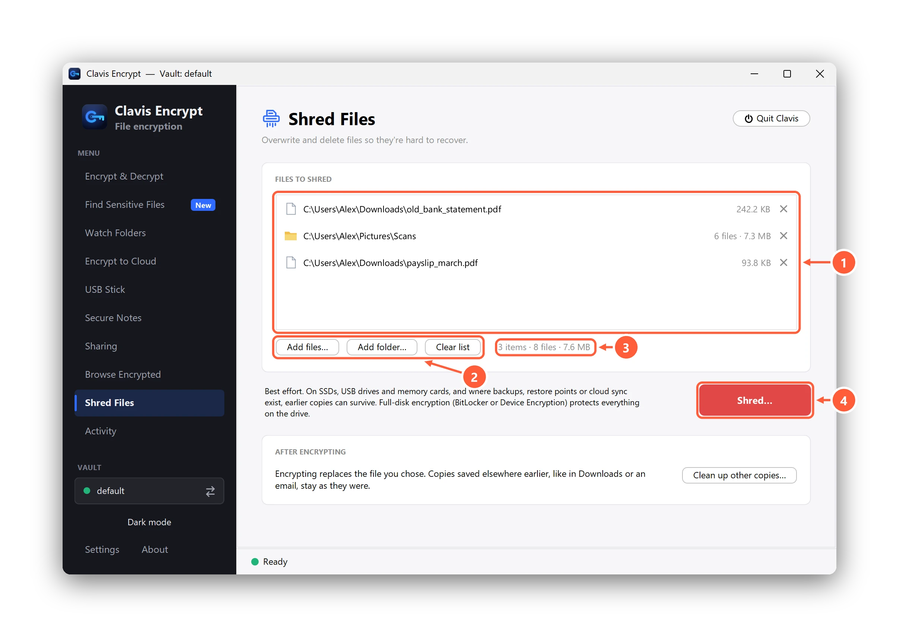

Shred files and clean up other copies
Shred Files in the sidebar overwrites files once with random data, gives them a random name and deletes them. They don't go to the Recycle Bin, and Clavis can't bring them back. It's free, folders included.
Shred files or folders
- Open Shred Files, then Add files… or Add folder…, or drag them onto the page. Dropping only adds them to the list; nothing is shredded yet.
- Press the red Shred… button. Clavis lists everything it's about to shred.
- Tick I understand this can't be undone. and press Shred. Enter and Esc both cancel.

- Files and folders to shred: nothing happens until you confirm
- Add files or folders, or drag them onto the page
- How many files, and how much space
- Press Shred… to check the list before anything is deleted

- Everything that will be shredded
- Tick to confirm it can't be undone
- Shred (Enter and Esc cancel)
On Windows you can also right-click files or folders and choose Clavis → Shred…. Stop finishes the current file and leaves the rest untouched. Files another app has open are skipped and listed, so you can close that app and press Try again. Activity records how many files were shredded and their size, never their names.
What Shred can and can't do
| Where the file is | What to expect |
|---|---|
| Hard disk inside the PC | Overwritten in place and deleted. Recovery tools can't get the contents back; the name can linger in the file system's records for a while. |
| SSD inside the PC | Deleted, and ordinary recovery tools usually can't get it back, but an SSD may keep old copies of blocks where no app can reach. Best effort. |
| USB stick or memory card | Overwritten and deleted, but flash drives can keep copies no app can reach. Best effort. |
| Cloud-synced folder (OneDrive, Google Drive, Dropbox) | Removed from this PC. The cloud keeps deleted files and older versions for about 30 days: delete them online too. Online-only files are removed without being downloaded. |
| Backups, restore points, email, chat apps | Not touched. See the checklist below. |
Clavis overwrites once. More passes don't make it safer on today's drives; they only wear out flash memory. Clavis doesn't wipe free space. For the strongest protection, turn on BitLocker or Device Encryption, and keep sensitive files encrypted from the moment you create them.
Clean up other copies
Encrypting replaces the file you chose. Copies saved elsewhere earlier stay as they were. After encrypting, or from the Shred Files page, Clean up other copies… lists the places to check: Downloads and Desktop, the Recycle Bin, email and chat apps, your cloud, USB and backup drives, File History and restore points, and Windows' picture previews (Disk Cleanup → Thumbnails). It only opens those places for you; it doesn't search, read or delete anything.
Can't find what you need? All help articles · Email us